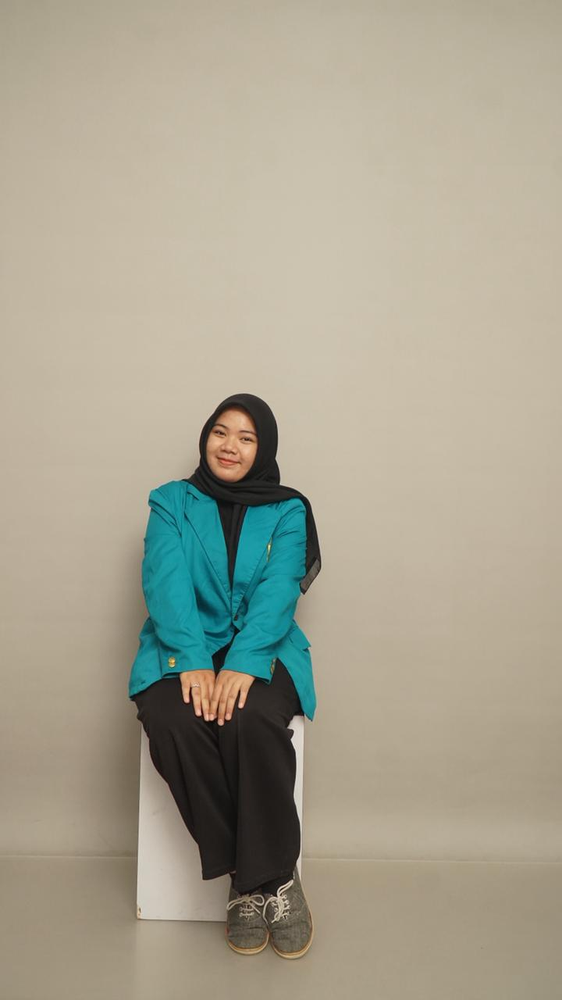

Mahasiswa Informatika angkatan 2024 yang sedang belajar memahami dasar-dasar pemrograman dan sistem, serta terus berkembang melalui berbagai tugas dan pengalaman.

Sekilas tentang siapa saya dan apa yang sedang saya kerjakan saat ini.
| Nama Lengkap | Raisa Salsa Nabila |
|---|---|
| Tempat, Tanggal Lahir | Sigli, 3 September 2006 |
| Domisili | Banda Aceh, Aceh, Indonesia |
| Program Studi | Informatika |
| Angkatan | 2024 |
| Organisasi | HMIF — Divisi ADM (2026–2027) |
| Perguruan Tinggi | Universitas Syiah Kuala |
| raisasal03@gmail.com | |
| Status | Pelajar Aktif |
Saya adalah Raisa Salsa Nabila, mahasiswa Informatika angkatan 2024 di Universitas Syiah Kuala. Saat ini aktif sebagai anggota divisi ADM di HMIF periode 2026–2027.
Ketertarikan saya berpusat pada pemahaman konsep dasar ilmu komputer tentang bagaimana logika bisa menjadi sistem, dan bagaimana sistem bisa menjadi solusi nyata.
Di luar kelas, saya senang mengeksplorasi desain antarmuka, bermain dengan data, dan membangun sesuatu yang bisa dilihat dan dirasakan hasilnya.
Bahasa dan tools yang sudah saya pelajari dan gunakan dalam berbagai project.
Beberapa project yang telah saya kerjakan selama perkuliahan mulai dari prototype hingga tahap implementasi.
Platform informasi berbasis web yang dirancang untuk mendukung ekosistem komunitas pengrajin, penjual kriya lokal, dan pemasok bahan di Aceh. Masih dalam fase perancangan prototype dengan fokus pada user experience yang intuitif.
Platform web preloved untuk area Banda Aceh dengan sistem transaksi COD. Dirancang untuk memudahkan jual beli barang bekas secara lokal dengan antarmuka yang sederhana dan efisien. Sekarang masih dalam tagap pengembangan sistem.
Kalkulator ilmiah berbasis web dengan dukungan fungsi trigonometri, logaritma, pangkat, dan operasi dasar. Dibangun dengan antarmuka yang bersih dan responsif.
Sistem pemesanan berbasis terminal yang dikembangkan menggunakan bahasa C. Aplikasi ini mencakup fitur login pengguna, manajemen produk, proses pemesanan, serta riwayat transaksi dengan penyimpanan data menggunakan file.
Tertarik berkolaborasi atau sekadar ingin mengobrol? Saya terbuka untuk hal-hal baru.
I'm currently open to collaboration projects, internships, or learning opportunities. Feel free to reach out!
Start a conversation